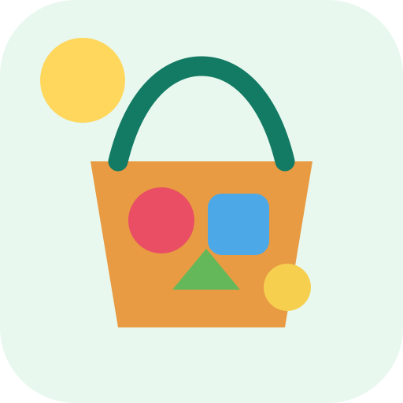

نبدأ بما هو موجود حولنا
أين سنلعب وماذا لدينا؟
اختر المكان والمواد الكبيرة الآمنة. لا يحتاج الطفل إلى القراءة.

المكان
المواد المتاحة
نوع اللعب
الخاصية التي نركز عليها
فحص سريع قبل اللعب
يجب تأكيد نقاط السلامة الأربع قبل بناء المهمة.
مهمتنا
✏️ مصمم المرافق — خصص المهمة
الآن نضع الشاشة جانبًا
توقفوا إذا تعب الطفل أو رفض أو أصبحت المواد/المساحة غير آمنة.
ماذا حدث؟
مهماتي المحفوظة
الحفظ محلي على هذا الجهاز. لا تُرفع صور أو ملاحظات للخارج.